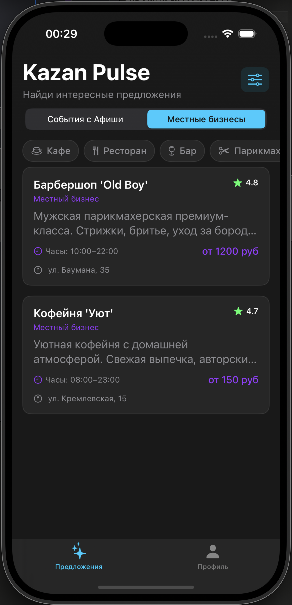
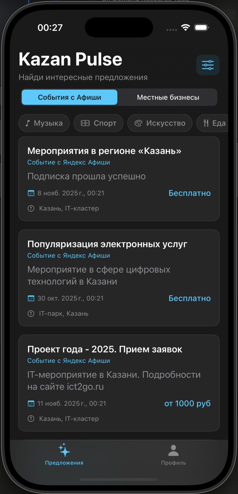
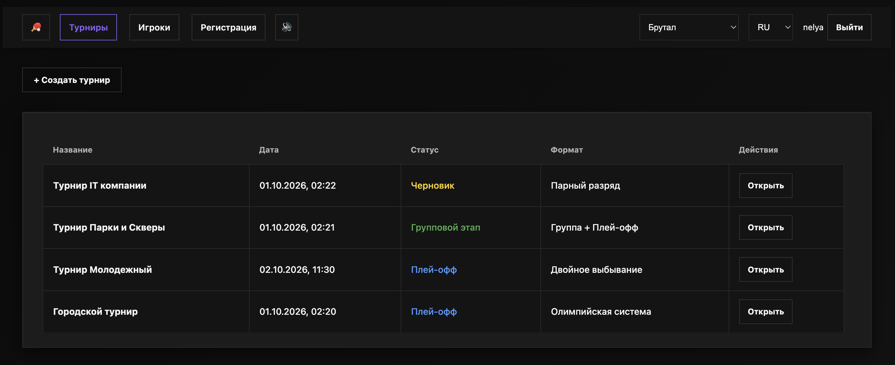
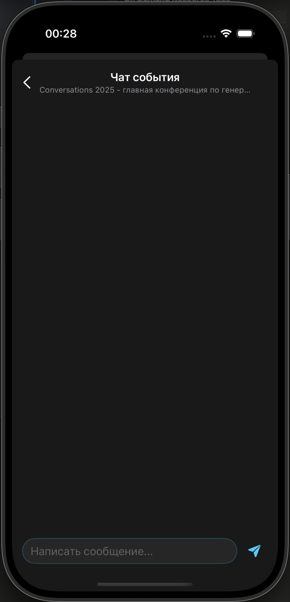
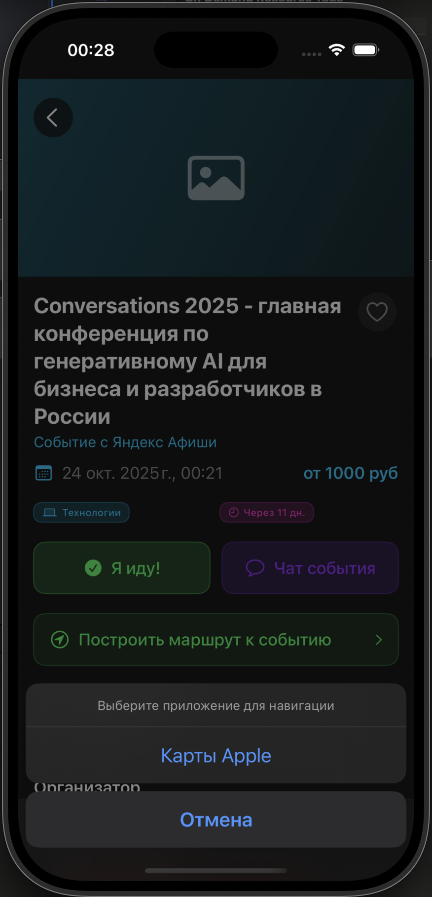
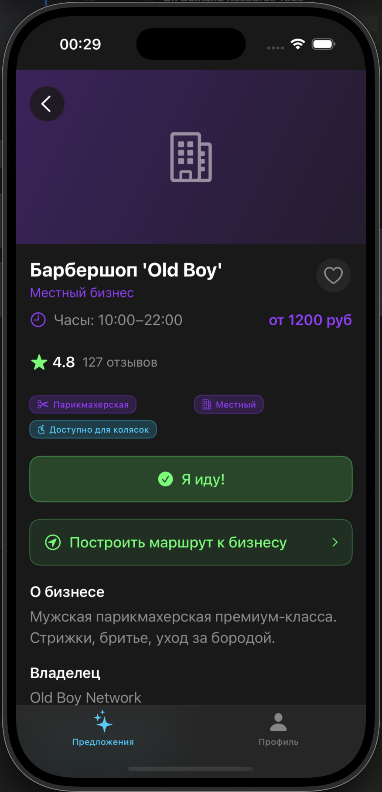

Экосистема городских активностей
А также социальная платформа мелкого бизнеса

Проблема 1. Люди не знают о событиях города и полезных бизнесах.
Проблема 2. У людей нет желания и мотивации посещать события или идти в неизвестное кафе в одиночку.
Информация разбросана. Идти одному — скучно. Малый бизнес не может найти первых клиентов.

Kazan Pulse — находи события и компанию.
Настольный теннис — записывайся на продолжение вместе.
Нашёл событие → нажал «Пойду» → попал в чат → пошёл с компанией → увидел антикафе → записался на турнир всей группой.
Настольный теннис — с монетизацией Настольный теннис — бесплатно
Kazan Pulse приводит людей. Настольный теннис удерживает их после. Бизнес получает поток клиентов. Люди проводят время с пользой.
Чат события объединяет тех, кто уже идёт. Договорись о встрече, обсуди детали, найди друзей по интересам.


Мелкий бизнес размещает карточки (рекламу) в обмен на поток пользователей.
Потенциальные покупатели для бизнеса — это выручка.
Антикафе, теннисные клубы, барбершопы, кофейни — все, кто рядом с событиями.

9 месяцев до масштабирования. От города — к региону и федерации.
Готовы обсуждать партнёрство, инвестиции и запуск.
Исходный код Kazan Pulse
github.com/onlymyrep/Kazan_pulse_all_versionsНастольный теннис с подпиской
tennis.runsite.appНастольный теннис — бесплатная версия с пробным периодом
tabletennis-backend-3ga1.onrender.comЯзыки: татарский, испанский, английский